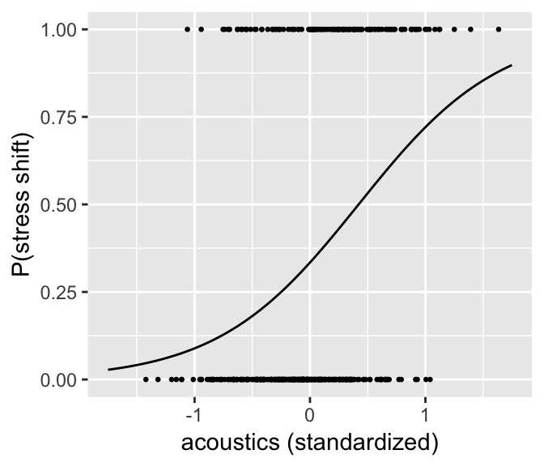
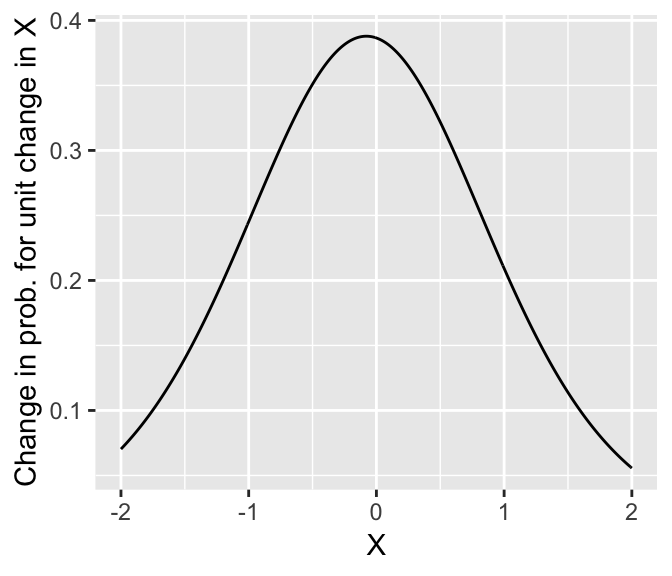
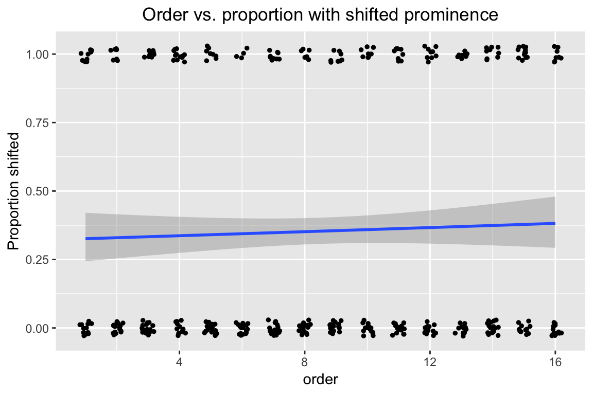
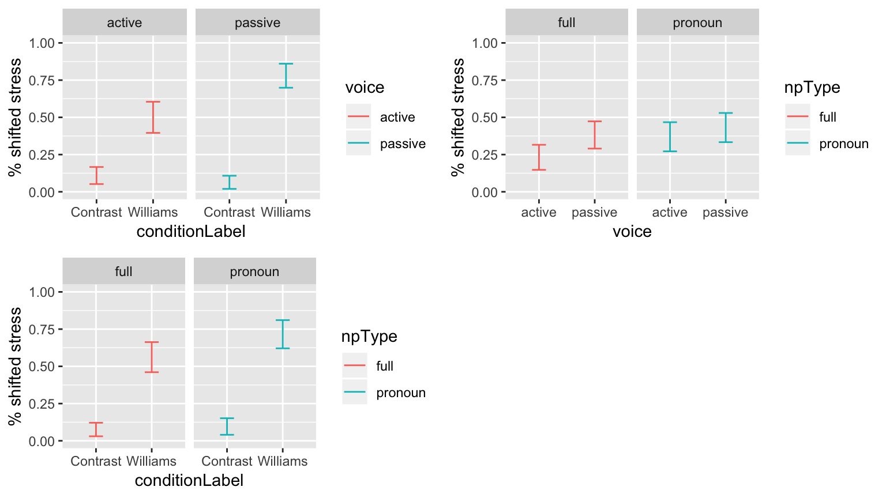
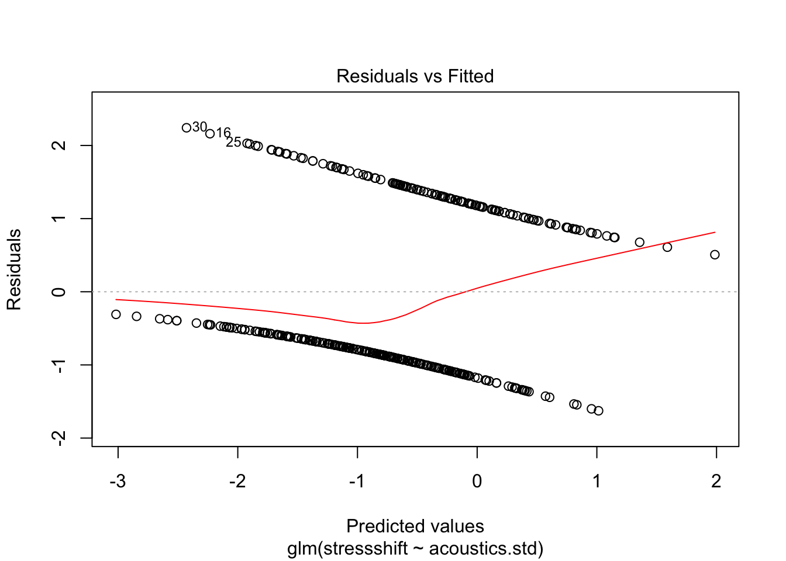
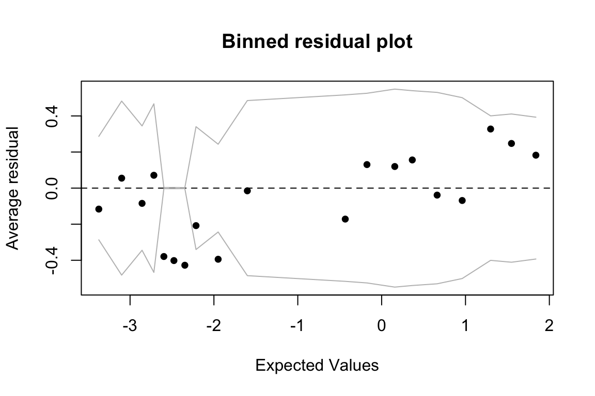
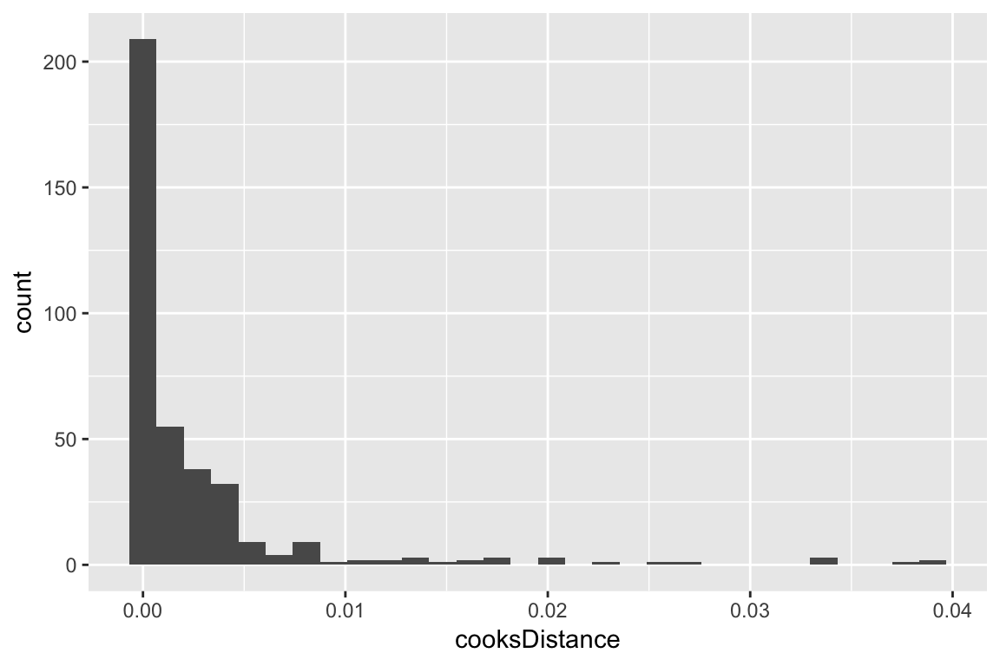
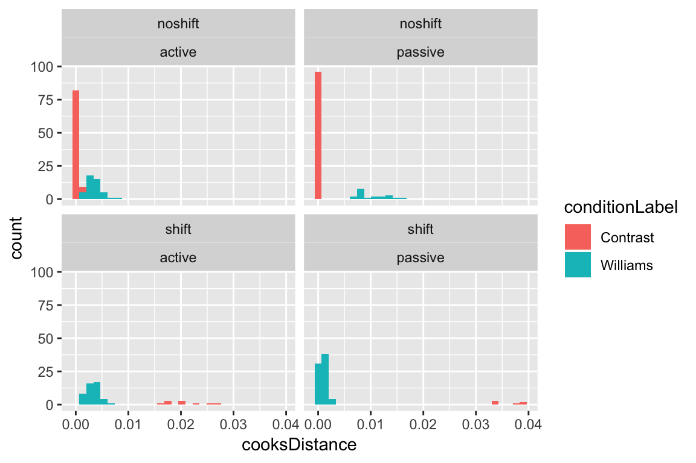

Chapter 5 Logistic regression
Preliminary code
This code is needed to make other code below work:
library(gridExtra) # for grid.arrange() to print plots side-by-side
library(languageR)
library(ggplot2)
library(dplyr)
library(arm)
library(boot)
## loads givennessMcGillLing620.csv from OSF project for Wagner (2012) data
givenness <- read.csv(url("https://osf.io/q9e3a/download"))
## make standardized (numeric/centered/scaled) versions of 'givenness' dataset predictors:
givenness <- mutate(givenness,
conditionLabel.williams = arm::rescale(conditionLabel),
clabel.williams = arm::rescale(conditionLabel),
npType.pronoun = arm::rescale(npType),
npType.pron = arm::rescale(npType),
voice.passive = arm::rescale(voice),
order.std = arm::rescale(order),
stressshift.num = (as.numeric(stressshift) - 1),
acoustics.std = arm::rescale(acoustics)
)Note: Answers to some questions/exercises not listed in text are in Solutions
5.1 Simple logistic regression
Analogously to “simple linear regression”, which is predicting a continuous \(Y\) from a single predictor \(X\), in simple logistic regression we predict a binary \(Y\).
Notation:
Our sample consists of \(n\) observations: \((x_1, y_1), ..., (x_n, y_n)\)
The response \(Y\) is binary: each \(y_i\) = 1 or 0.
There is a single predictor \(X\), which may be continuous or discrete.
We model the log-odds of \(Y = 1\) vs. \(Y = 0\) for the \(i^{\text{th}}\) observation:
\[ \log \left[ \frac{P(y_i = 1)}{P(y_i = 0)} \right] \equiv \text{logit}(P(y_i = 1)) \] as a function of the single predictor: \[ \text{logit}(P(Y = 1)) = \beta_0 + \beta_1 X \tag{5.1} \] This is the model in “logit space”, where the right-hand side of the equation (called the linear predictor) looks the same as for simple linear regression except for the lack of an error term, while the left-hand side of the equation looks similar to SLR modulo the logit function (called the link function).
The same model can be written in “probability space”: \[\begin{align} P(Y = 1) & = \text{logit}^{-1}(\beta_0 + \beta_1 X) \\ & = \frac{1}{1 + e^{-(\beta_0 + \beta_1 X)}} \end{align}\] The model in Eq. (5.1) predicts the log-odds of \(Y=1\) for a single observation as: \[\begin{equation*} \text{logit}(\hat{p}_i) = \hat{\beta}_0 + \hat{\beta}_1 x_i \end{equation*}\]5.1.1 Hypothesis testing
The test statistic \[\begin{equation} z = \frac{\hat{\beta}_1}{SE(\hat{\beta}_1)} \tag{5.2} \end{equation}\]turns out to be approximately normally distributed (e.g. Agresti (2003) 5.5.2).21 This means we can perform a Wald test of the null hypothesis to show that there is no relationship between \(P(Y=1)\) and \(X\): \[ H_0~:~\hat{\beta}_1 = 0 \] and get a \(p\)-value and confidence interval for the slope (\(\beta_1\)). The same is true for the intercept (\(\beta_0\)).
5.1.2 Interpreting the coefficients: Logit, odds, and probability
The regression coefficients, \(\beta_0\) and \(\beta_1\), can be interpreted in terms of log-odds, odds, or probability:
Intercept:
\(\beta_0\): predicted log-odds of \(Y = 1\) when \(X = 0\)
\(e^{\beta_0}\): predicted odds of \(Y = 1\) when \(X = 0\)
\(\text{logit}^{-1}(\beta_0)\): probability of \(Y = 1\) when \(X = 0\)
Slope:
\(\beta_1\): predicted change in log-odds of \(Y = 1\) for a unit change in \(X\)
\(e^{\beta_1}\): predicted amount odds of \(Y = 1\) is multiplied by for a unit change in \(X\)
The meaning of \(\beta_1\) in probability depends on the value of \(X\)
5.1.3 Logistic regression as a GLM
Logistic regressions are fit in R using the glm() function with the option family="binomial".
Why? Logistic regression is one type of generalized linear model (GLM): a family of models that look like linear regression, but with different choices for each part of Eq. (5.1): link function, linear predictor, probability distribution over \(Y\). Logistic regression assumes a binary response \(Y\), and uses the logit link function. Because the logit link is the most commonly used for binomially-distributed data (of which a binary response is a special case, with \(n=1\)), specifying family="binomial" gives a logit link by default (it’s the same as writing family = binomial(link = "logit")).22 There are many types of GLM, including some described in an Appendix below, but we’ll only discuss logistic regression in this book.
Example 1: Single continuous predictor
In the givenness data (described in detail here), whether stress shifted is captured by the continuous variable acoustics, which is a composite of prosodic measurements. We check using a simple logistic regression how the perceptual measure is related to the acoustic measure. That is:
\(Y\) is
stressshift- \(=1\) if shifted, 0 if not
\(X\) is
acoustics- (centered + scaled)
To fit and summarize this model:
mod1 <- glm(stressshift ~ acoustics.std, data=givenness, family="binomial")
summary(mod1)##
## Call:
## glm(formula = stressshift ~ acoustics.std, family = "binomial",
## data = givenness)
##
## Deviance Residuals:
## Min 1Q Median 3Q Max
## -1.6271 -0.8924 -0.6532 1.1213 2.2418
##
## Coefficients:
## Estimate Std. Error z value Pr(>|z|)
## (Intercept) -0.6897 0.1167 -5.908 3.47e-09 ***
## acoustics.std 1.6371 0.2588 6.325 2.54e-10 ***
## ---
## Signif. codes: 0 '***' 0.001 '**' 0.01 '*' 0.05 '.' 0.1 ' ' 1
##
## (Dispersion parameter for binomial family taken to be 1)
##
## Null deviance: 496.24 on 381 degrees of freedom
## Residual deviance: 448.07 on 380 degrees of freedom
## AIC: 452.07
##
## Number of Fisher Scoring iterations: 3A few notes about the model output, compared to the output of the linear regression models we’ve seen so far:
There are no references to “residuals” or “residual standard error”. This is because the logistic regression equation Eq. (5.1) has no error term, so there are no residuals.
There are no “R-squared” values. \(R^2\) is not a well-defined concept for logistic regression, for which different measures of goodness of fit are used (discussed below).
The model table contains
z statisticandPr(>|z|)columns rather thantandPr(>|t|)columns. This is because the test statistic \(\hat{\beta_i}/{SE(\hat{\beta}_i})\) for logistic regression (\(z\) in Eq. (5.2)) looks like a z-score and follows a normal distribution, while the test statistic follows a \(t\) distribution for linear regression.
5.1.3.1 Interpreting the model: Odds and log-odds
Questions:
- What are the log-odds of stress shifting when
acoustics= 0 ? (Remember this means “mean value ofacoustics”, because it’s centered.)
## [1] -0.6896608
- What is \(P\)(stress shift) when
acoustics= 0 ?
## [1] 0.3341085
- Increasing
acousticsby 1 (= 2 SD) corresponds to increasing the log-odds of stress shifting by _______ ?
## [1] 1.637052
- Increasing
acousticsby 1 (= 2 SD) corresponds to multiplying the odds of stress shifting by _______ ?
## [1] 5.1399965.1.3.2 Interpreting the model: Probability
We can plot the predicted \(P\)(stress shift) as a function of acoustics to get a sense of what the model predicts:
## set up dataframe with range of acoustics.std we want to predict over
newdata <- data.frame(acoustics.std=seq(-1.75,1.75, by=0.01))
## get the model's predictions in log-odds space
newdata$predLogit <- predict(mod1, newdata=newdata)
## transform those preditions to probability space
newdata <- newdata %>% mutate(predP=invlogit(predLogit))
ggplot(aes(x=acoustics.std, y=predP), data=newdata) +
geom_line() +
geom_point(data=givenness, aes(y=(as.numeric(stressshift)-1)), size=0.5) +
xlab("acoustics (standardized)") +
ylab("P(stress shift)")
As expected, there is a strong relationship between the acoustic proxy for stress shift, and whether stress is perceived as having shifted.
Let’s work out in more detail what “increase in log-odds” means in probability space for this model:
When
acoustics= 0:log-odds = -0.68
odds = 0.506
\(P\)(stress shift) = 0.336 = \(\text{logit}^{-1}\)(-0.68)
When
acoustics= 1:log-odds = 0.947
odds = 2.58 = \(e^{0.947}\)
\(P\)(Y = 1) = 0.720 = \(\text{logit}^{-1}\)(0.947)
Thus, the change in probability \(P\)(Y = 1) when you increase \(X\) by 1 is 0.348 here (\(X: 0 \to 1\)) However, in general what change in probability results when \(X\) is increased by 1 (a “unit change”) will depend on where you start from: 
Note that the greatest change in probability occurs when \(P(Y=1|X) = 0.5\) (at \(X=0.69 \implies \beta_0 + \beta_1 X = 0\)). The change in probability here (\(\approx 0.4\)) is roughly 1/4 of the fitted slope value: \[ \frac{\beta_1}{4} = \frac{1.637}{4} = 0.41 \] It turns out that this relationship holds more generally, and the divide-by-4 rule can be used to roughly interpret logistic regression slopes in terms of probability (Gelman & Hill (2007), p. 82): the slope (in log-odds) is about 4x the maximum change in probability.
Example 2: Single categorical predictor
Let’s now predict the probability of stress shifting (stressshift) for the givenness data, as a function of the NP type (npType). This predictor is “dummy coded”, with values:
\(X = 0\): Full NP
\(X = 1\): Pronoun
The regression model is still Eq. (5.1).
Questions: What are the interpretations of the regression coefficients?
Intercept (\(\beta_0\))
Slope (\(\beta_1\))
To fit and summarize this model:
mod2 <- glm(stressshift ~ npType, data=givenness, family="binomial")
summary(mod2)##
## Call:
## glm(formula = stressshift ~ npType, family = "binomial", data = givenness)
##
## Deviance Residuals:
## Min 1Q Median 3Q Max
## -1.014 -1.014 -0.850 1.350 1.545
##
## Coefficients:
## Estimate Std. Error z value Pr(>|z|)
## (Intercept) -0.8321 0.1587 -5.244 1.57e-07 ***
## npTypepronoun 0.4353 0.2159 2.016 0.0438 *
## ---
## Signif. codes: 0 '***' 0.001 '**' 0.01 '*' 0.05 '.' 0.1 ' ' 1
##
## (Dispersion parameter for binomial family taken to be 1)
##
## Null deviance: 496.24 on 381 degrees of freedom
## Residual deviance: 492.14 on 380 degrees of freedom
## AIC: 496.14
##
## Number of Fisher Scoring iterations: 4The model predicts \(P\)(stress shift) to be:
Full NPs: \(\text{logit}^{-1}(-0.832)=\) 0.303
Pronouns: \(\text{logit}^{-1}(-0.832 + 0.435)=\) 0.402
We can compare to the observed proportion of stress-shifted observations for each NP type:
## Observed condtion means:
prop.table(xtabs(~npType + stressshift, data=givenness), margin=1)## stressshift
## npType noshift shift
## full 0.6968085 0.3031915
## pronoun 0.5979381 0.4020619and see that the model matches these proportions exactly (shift column). This makes sense, as predicting these two numbers is all the model has to do for simple logistic regression with one categorical predictor.
5.1.4 Differences from linear regression: Fitting and interpretation
There are two important differences between logistic regression and linear regression, for our purposes:
The relationship between the response and what’s being modeled. In linear regression, these are the same thing: \(Y\) is the response variable, which is also what the regression is modeling. In logistic regression, these are not the same thing: we observe \(Y\), which takes on values 0 or 1, but we model the expected value of \(Y\) (\(E(Y)\)): the probability that \(Y=1\).
The presence of an error term. In linear regression, there is an error term \(\epsilon_i\), capturing the difference between the fitted value (\(\hat{y}_i\)) and the actual value (\(y_i\)) for each observation, along with the linear predictor (\(\beta_0 + \beta_1 x_{i1} + \cdots + \beta_p x_{ip}\)). In logistic regression, there is no error term: the right-hand side of Eq. (5.1) predicts \(P(Y=1)\) using just the linear predictor.
Why? For a Bernoulli random variable \(Y\) (basically, a coin that comes up “heads” with some probability \(p\)), the variance and expectation only depend on one unknown parameter, \(p\): \[ E(Y) = p, \quad \text{Var}(Y) = p(1-p) \] So unlike for linear regression, where the mean (\(\mu\)) and variance (\(\sigma\)) in our model of the response can be tweaked independently to better fit the data, in logistic regression these two things are not independent. By fitting the mean (probability that \(Y=1\)), we have already determined the variance.
Both differences make interpreting and fitting logistic regression models less straightforward than linear regression models.
5.1.5 Fitting a logistic regression model
For linear regression, it was possible to estimate the regression coefficients by “least squares”: minimizing the difference between the model’s prediction and the observed data (\(\epsilon_i^2\)), across all points. Least-squares has a closed-form solution: the regression coefficients can be solved for by plugging the predictor and response values for all observations into an equation.
For logistic regression, there are no residuals, so we can’t use a least-squares method. Instead, we use a likelihood-based method: determine the probability of the observed data, given values of the regression coefficients (the data likelihood), then find the regression coefficient values that maximize this probability.
For simple logistic regression: for any \(\beta_0\) and \(\beta_1\), the likelihood of the data is: \[\begin{equation*} L(\beta_0, \beta_1) = \sum^n_{i = 1} \left[ \text{logit}^{-1}(\beta_0 + \beta_1 x_i) \right]^{y_i} \tag{5.3} \end{equation*}\]We choose \(\hat{\beta}_0, \hat{\beta}_1\) that maximize the likelihood: the maximum likelihood (ML) estimates. There is no closed form solution for \(\hat{\beta}_0, \hat{\beta}_1\), which must instead be estimated numerically, using an estimation algorithm.23
5.1.6 Interpretation
You of course don’t need to understand the math to fit lm() or glm() models—R will do this for you automatically. However, it can be helpful to know some basic aspects of how these models are fitted to interpret model output, and some otherwise cryptic error messages. For example:
(Dispersion parameter for binomial family taken to be 1)in logistic regression output: related to the relationship between mean and variance—the amount of variability in the data is assumed to be similar to what you’d expect based on the estimated mean. If it’s not, your data is “over-dispersed” or “under-dispersed.”24Number of Fisher Scoring iterations: Xin logistic regression output: refers to the numeric algorithm used to fit logistic regression models (see footnote 3).There is no \(F\) statistic or \(p\) value in logistic regression output: this is because there are no residuals, so the “full” and “reduced” models cannot be compared via their residual sums of squares (which are used to conduct an \(F\) test for linear regression).
If you try to fit a logistic regression model with just \(Y=1\) response values (no \(Y=0\) values), you’ll get the message
glm.fit: algorithm did not converge:
badmodel <- glm(stressshift ~ acoustics.std, data=filter(givenness, stressshift=='shift'), family="binomial")## Warning: glm.fit: algorithm did not convergeThis means that the numeric algorithm used to maximize likelihood couldn’t find a good solution for the regression coefficients. This makes sense, because the model is trying to fit 100% probabilities (so log-odds = \(\infty\)), and has no data on the basis of which it can estimate the slope (\(\beta_1\)).
5.2 Evaluating logistic regression models
We would like a measure of goodness-of-fit for logistic regression models: how well does the model predict \(Y\), compared to a baseline model? For linear regression, we used \(R^2\) to quantify how similar the model’s predictions (\(\hat{y}_i\)) were to the observations (\(y_i\)), relative to a baseline model where the model’s prediction is always the grand mean—\(R^2\) was simply the correlation between observed and predicted values.
However, for logistic regression we cannot directly compare model predictions (\(p_i\): (log-odds of) probabilities) to observations (\(y_i\): 0 or 1), so we need a different measure of goodness-of-fit. We consider three commonly used options:
Likelihood ratio test
Classification accuracy
Pseudo-\(R^2\)
to compare a logistic regression model to a baseline (intercept-only model). We assume here that the logistic regression model has just one predictor \(X\), and denote this model by \(M_1\) and the baseline model by \(M_0\).
5.2.1 Likelihood ratio test
This option is analogous to the \(F\) test for linear regression models, where the full model is compared to the intercept-only model, and we test whether the change in sum-of-squares is significant, given the added predictors in the full model.
Logistic regression models don’t have sums-of-squares because they don’t have residuals. Instead, we compare the likelihood (Eq. (5.3)) of the two models: is the change in likelihood between \(M_0\) and \(M_1\) significant?
Most methods involving likelihood use log-transformed likelihood, mostly to avoid numerical issues when computing with very small numbers. Instead of working with straight log-likelihood, it is also customary to define the deviance of a model \(M\) (Agresti (2007) 3.4.3), as \[\begin{equation*} D = -2 \log L(M) \end{equation*}\]Thus, a better model (higher likelihood) has lower deviance.
The difference in deviance (\(\Delta D\)) between models with (\(M_1\)) and without (\(M_0\)) the single predictor is related to the log of their likelihood ratio: \[\begin{equation*} \Delta D = -2 \log \frac{L(M_0)}{L(M_1)} \end{equation*}\]For large enough sample size, \(\Delta D\) follows a \(\chi^2(1)\) distribution if the slope of \(X\) (\(\beta_1\)) is 0. Thus, we can use \(\Delta D\) as a test statistics for the null hypothesis that \(\beta_1 = 0\). This kind of test is called a likelihood ratio test. The \(p\) value of this test gives a measure of goodness of fit, while \(\Delta D\) gives a sort of measure of variance accounted for (if you think of deviance as capturing “variance” from the perfect model).
For our Example 1, an LR test is conducted in R as follows:
mod1 <- glm(stressshift ~ acoustics.std, data=givenness, family="binomial")
mod0 <- glm(stressshift ~ 1, data=givenness, family="binomial")
## LR test of the effect of acoustics.std in mod1
anova(mod0, mod1, test='Chisq')## Analysis of Deviance Table
##
## Model 1: stressshift ~ 1
## Model 2: stressshift ~ acoustics.std
## Resid. Df Resid. Dev Df Deviance Pr(>Chi)
## 1 381 496.24
## 2 380 448.07 1 48.17 3.909e-12 ***
## ---
## Signif. codes: 0 '***' 0.001 '**' 0.01 '*' 0.05 '.' 0.1 ' ' 1Note that for simple linear regression, this is just another way to test the hypothesis that \(\beta_1 = 0\), in addition to the \(z\) test reported in the regression summary.
summary(mod1)##
## Call:
## glm(formula = stressshift ~ acoustics.std, family = "binomial",
## data = givenness)
##
## Deviance Residuals:
## Min 1Q Median 3Q Max
## -1.6271 -0.8924 -0.6532 1.1213 2.2418
##
## Coefficients:
## Estimate Std. Error z value Pr(>|z|)
## (Intercept) -0.6897 0.1167 -5.908 3.47e-09 ***
## acoustics.std 1.6371 0.2588 6.325 2.54e-10 ***
## ---
## Signif. codes: 0 '***' 0.001 '**' 0.01 '*' 0.05 '.' 0.1 ' ' 1
##
## (Dispersion parameter for binomial family taken to be 1)
##
## Null deviance: 496.24 on 381 degrees of freedom
## Residual deviance: 448.07 on 380 degrees of freedom
## AIC: 452.07
##
## Number of Fisher Scoring iterations: 3However, for multiple regression models with more than one predictor, the LR test gives a measure of overall model fit, and is not testing the same thing as the \(z\) tests reported by summary(model) for each predictor.
5.2.2 Classification accuracy
A second way to assess model quality comes from thinking of the model as predicting \(Y\), as follows: \[\begin{equation*} \hat{y}_i = \begin{cases} 1 & \text{if } \hat{p}_i > 0.5 \\ 0 & \text{if } \hat{p}_i \leq 0.5 \end{cases} \end{equation*}\]That is, just predict \(Y=1\) if the predicted log-odds are positive, and \(Y=0\) if the predicted log-odds are negative. We can then define classification accuracy as the percentage of observations where the predicted and observed values are the same (\(\hat{y}_i = y_i\)).
Classification accuracy always needs to be compared to a baseline, usually “how often would we classify correctly if we chose the most common case?” Formally, if \(n_1\) and \(n_2\) are the number of observations where \(y_i = 0\) and \(y_i = 1\) in the data, the baseline classification accuracy is: \[\begin{equation*} \max \left( \frac{n_1}{n}, \frac{n_2}{n} \right) \end{equation*}\]Here are functions for computing the classification accuracy and baseline accuracy of a logistic regression model:
## function for computing accuracy of a logistic regression model
## (on the dataset used to fit the model)
## lrMod = fitted model
## responseVar = name of response variable for lrMod
##
## adapted from: https://www.r-bloggers.com/evaluating-logistic-regression-models/
lrAcc <- function(lrMod, responseVar){
## convert response variable into a factor if it's not one
if(!is.factor(model.frame(lrMod)[,responseVar])){
model.frame(lrMod)[,responseVar] <- as.factor(model.frame(lrMod)[,responseVar])
}
## model predictions in log-odds
preds = predict(lrMod, newdata=model.frame(lrMod))
## transform to 0/1 prediction
preds <- ((sign(preds)/2)+0.5)
## response variable values, transformed to 0/1
y <- (as.numeric(model.frame(lrMod)[,responseVar])-1)
## how often is prediction the same as the actual response
acc <- sum(preds==y)/length(preds)
return(acc)
}
## baseline accuracy for a logisitic regression model lrMod
## with a given response variable
baselineAcc <- function(lrMod, responseVar){
response <- model.frame(lrMod)[,responseVar]
tab <- table(response)
return(max(tab)/sum(tab))
}
## baseline accuracyFor our Example 1 (stresshift ~ acoustics.std), the classification accuracy is
lrAcc(mod1, 'stressshift')## [1] 0.7015707Compared to a baseline of 0.65 (using baselineAcc(mod1, 'stressshift')). The model performs better than the baseline, but its performance is less impressive than it seems (70%) given that the most common case (not shifting stress) accounts for 65% of the data.
5.2.3 Pseudo-\(R^2\)
There is no equivalent to \(R^2\) for logistic regression, meaning a quantity with similar properties and multiple interpretations:
Fraction reduction in sum-of-squares (there is no sum-of-squares)
Degree of “variance” accounted for (“variance” isn’t well-defined)
Squared correlation between fitted and observed values (different scales: probabilities versus 0/1)
Nonetheless, we might want an \(R^2\)-like quantity that at least has similar properties, if we find such measures easier to interpret than classification accuracy or an LR test result. A number of pseudo-\(R^2\) measures exist, of which the two most common are:
Cox-Snell pseudo-\(R^2\): a value \(\geq 0\)
Nagelkerke pseudo-\(R^2\): a value between 0 and 1 (like \(R^2\) for linear regression)
Both measures are related to the likelihood ratio of the full and reduced (intercept-only) model. Pseudo-\(R^2\) measures should not be taken too seriously, but can be useful, for example for comparing goodness of fit between logistic regression and linear regression models. We won’t consider these methods further, but they are reported in some papers.
Example
How well does our Example 2 model (stressshift ~ npType) do at predicting whether stress shifts?
mod2 <- glm(stressshift ~ npType, data=givenness, family="binomial")By the likelihood ratio test:
## LR test of the effect of npType in mod2
anova(mod2,mod0, test='Chisq')## Analysis of Deviance Table
##
## Model 1: stressshift ~ npType
## Model 2: stressshift ~ 1
## Resid. Df Resid. Dev Df Deviance Pr(>Chi)
## 1 380 492.14
## 2 381 496.24 -1 -4.0972 0.04295 *
## ---
## Signif. codes: 0 '***' 0.001 '**' 0.01 '*' 0.05 '.' 0.1 ' ' 1there is a (barely) significant effect of npType, corresponding to a difference in deviance of \(\Delta D = 4.1\).
However, classification accuracy:
## accuracy of mod2
lrAcc(mod2, 'stressshift')## [1] 0.6465969## it's the same as the baseline's accuracy
baselineAcc(mod1, 'stressshift')## [1] 0.6465969does not differ between the baseline and full models. This example illustrates a couple of points:
- Different methods for comparing two models won’t necessarily give the same qualitative answers—as we already saw with AIC versus BIC-based model selection.
- Classification accuracy is a blunter tool than an LR test—it does not reflect effects that are small compared to baseline accuracy, because in order to affect classification accuracy an effect has to be big enough to change the sign of the predicted log odds.
5.3 Multiple logistic regression
Like for linear regression, generalizing from one predictor to multiple predictors is straightforward for logistic regression.
We assume there are \(p\) predictors (\(X_1, ..., X_p\)) of a binary response \(Y\), where each \(X_i\) can be continuous or categorical. The logistic regression model is now: \[\begin{equation*} \text{logit}(P(Y = 1)) = \beta_0 + \beta_1 X_1 + \cdots + \beta_p X_p \end{equation*}\] Rewriting this model in terms of odds by exponentiating each side: \[\begin{equation*} \frac{P(Y = 1)}{P(Y = 0)} = e^{\beta_0}e^{\beta_1 X_1}\cdots e^{\beta_p X_p} \end{equation*}\] or, rewriting with \(\alpha_i = e^{\beta_i}\): \[\begin{equation*} \frac{P(Y = 1)}{P(Y = 0)} = \alpha_0 \alpha_1^{X_1}\cdots \alpha_p^{X_p} \end{equation*}\]That is, each predictor’s effect on the odds are multiplicative. A predictor that has no effect corresponds to multiplying by 1 (\(\alpha_i = 1\)), while predictors with “negative” effects decrease the odds (\(\alpha_i < 1\)) and predictors with “positive”" effects increase the odds (\(\alpha_i > 1\)).
5.3.1 Likelihood ratio test: General case
The likelihood ratio test generalizes to the case of comparing two nested logistic regression models, with \(p\) and \(q\) predictors:
\[\begin{align} M_0 & : X_1, ..., X_p \\ M_1 & : X_1, ..., X_p, X_{p + 1}, ..., X_q \end{align}\]With the difference in deviance again defined as \[ \Delta D = - 2\log\frac{L(M_0)}{L(M_1)} \]
\(\Delta D\) approximately follows a \(\chi^2(q - p)\) distribution (Agresti (2003) 3.4.4), if \[ \beta_{p + 1} = \beta_{p + 2} = \cdots = \beta_q = 0 \]
Thus, we can use \(\Delta D\) as a test statistic for the null hypothesis that all the added predictors have no effect: \[ H_0: \beta_{p + 1} = \beta_{p + 2} = \cdots = \beta_q = 0 \]
5.3.2 Worked example
In this example, we model the probability of shifting stress (stressshift) for the givenness data, as a function of four predictors—all standardized (see code chunk at the beginning of this chapter):
Condition:
conditionLabel.williamsNP Type:
npType.pronounVoicing:
voice.passiveTrial number:
order
We will carry out a full analysis (except model criticism):
Exploratory data analysis, motivating which terms to include in a model
Fit a first model
Variable selection: adding and dropping terms
Model evaluation
Exploratory data analysis
In this empirical plot of how order affects the probability of stress shifting, our actual observations appear as points at \(y=0\) or \(y=1\), while the prediction from a simple logistic regression (on just order) appears as the fitted blue line:
ggplot(aes(x=order, y=stressshift.num), data=givenness) +
geom_smooth(method="glm", method.args = list(family = "binomial")) +
geom_jitter(position=position_jitter(width=0.2,height=0.03),size=1) +
ylab("Proportion shifted") +
ggtitle("Order vs. proportion with shifted prominence") +
theme(plot.title = element_text(hjust = 0.5))
Proportion tables showing how the probability of stress shifting depends on each categorical predictor (plots would be better):
conditionLabel:
prop.table(xtabs(~conditionLabel+stressshift, data=givenness), margin=1)## stressshift
## conditionLabel noshift shift
## Contrast 0.91919192 0.08080808
## Williams 0.35326087 0.64673913npType:
prop.table(xtabs(~npType+stressshift, data=givenness), margin=1)## stressshift
## npType noshift shift
## full 0.6968085 0.3031915
## pronoun 0.5979381 0.4020619voice:
prop.table(xtabs(~voice+stressshift, data=givenness), margin=1)## stressshift
## voice noshift shift
## active 0.7005348 0.2994652
## passive 0.5948718 0.4051282The expected directions of effects of the predictors on percent stress-shifted are:
order: positiveconditionLabel.williams,npType.pronoun,voice.passive: positive
Model
We fit a first multiple logistic regression model using just main effects of the four predictors:
mod3 <- glm(stressshift ~ npType.pron + clabel.williams + voice.passive + order.std,
family = "binomial",
data = givenness)
summary(mod3)##
## Call:
## glm(formula = stressshift ~ npType.pron + clabel.williams + voice.passive +
## order.std, family = "binomial", data = givenness)
##
## Deviance Residuals:
## Min 1Q Median 3Q Max
## -1.8358 -0.5249 -0.3509 0.7644 2.6344
##
## Coefficients:
## Estimate Std. Error z value Pr(>|z|)
## (Intercept) -1.0092 0.1580 -6.389 1.67e-10 ***
## npType.pron 0.5985 0.2746 2.179 0.0293 *
## clabel.williams 3.1848 0.3179 10.018 < 2e-16 ***
## voice.passive 0.8026 0.2803 2.863 0.0042 **
## order.std 0.3044 0.2742 1.110 0.2669
## ---
## Signif. codes: 0 '***' 0.001 '**' 0.01 '*' 0.05 '.' 0.1 ' ' 1
##
## (Dispersion parameter for binomial family taken to be 1)
##
## Null deviance: 496.24 on 381 degrees of freedom
## Residual deviance: 335.90 on 377 degrees of freedom
## AIC: 345.9
##
## Number of Fisher Scoring iterations: 5Note that because the predictors are standardized, we can interpret their values as relative effect sizes: the conditionLabel effect is much stronger than the others, then voice > npType > order. The direction of all effects is positive, as predicted.
Let’s interpret a couple terms from the model, in terms of log-odds and probability:
Intercept
\(\beta_0 = -1.01\), corresponds to probability \(0.267\)
Thus, 27% stress shift is predicted overall (all predictors held at mean values)
Slope for
conditionLabel.williamsCoefficient = 3.18
Interpretation: the odds of stress shifting are multiplied by 24.0 (\(e^{3.18}\)) in Williams condition (with other predictors at mean values). This is a huge effect!
Corresponds to a maximum change of 0.80 in probability (divide-by-4-rule: 3.18/4=0.80).
Exercise:
What are the predicted log-odds of stress shifting when:
order= mean valuenpType= pronounconditionLabel= Williamsvoice= active
Hint: assume that the three categorical variables just take on values -0.5 and 0.5.
## [1] 0.6818186Model evaluation
To evaluate the model in terms of how much likelihood improves from a null model, we first set the null model:
mod3.0 <- glm(stressshift ~ 1, family = "binomial", data = givenness)Then carry out the likelihood ratio test:
anova(mod3, mod3.0, test="Chisq")## Analysis of Deviance Table
##
## Model 1: stressshift ~ npType.pron + clabel.williams + voice.passive +
## order.std
## Model 2: stressshift ~ 1
## Resid. Df Resid. Dev Df Deviance Pr(>Chi)
## 1 377 335.90
## 2 381 496.24 -4 -160.34 < 2.2e-16 ***
## ---
## Signif. codes: 0 '***' 0.001 '**' 0.01 '*' 0.05 '.' 0.1 ' ' 1Note that the degrees of freedom of this comparison is \(p-q = 4\), since there are four predictors in the full model. The difference in deviance is \(\Delta D = 160.34\). Since we find Pr(>Chisq) < 2.2e-16 we may conclude that our four terms make a very significant contribution to the overall model likelihood.
To assess model quality using classification accuracy:
## classification accuracy
lrAcc(mod3, 'stressshift')## [1] 0.8089005Compared to baseline accuracy:
## baseline accuracy
baselineAcc(mod3, 'stressshift')## [1] 0.6465969Thus, the four predictors improve classification accuracy by 15%.
Variable selection
In this exercise we will follow the variable selection guidelines from Gelman & Hill discussed in the previous chapter.
First two steps:
Include main effects for predictors expected to affect the response (done)
Consider interactions between terms with large effects (we do this now)
These empirical plots, for each pair of variables with the largest effects, tell us which interactions are most suggestive:
day14plt1 <- ggplot(aes(x=conditionLabel, y=stressshift.num), data = givenness) +
stat_summary(fun.data="mean_cl_boot", geom="errorbar", width=0.25, aes(color=voice)) +
facet_wrap(~voice) +
ylab("% shifted stress") +
ylim(0,1)
day14plt2 <- ggplot(aes(x=voice, y=stressshift.num), data = givenness) +
stat_summary(fun.data="mean_cl_boot", geom="errorbar", width=0.25, aes(color=npType)) +
facet_wrap(~npType) +
ylab("% shifted stress") +
ylim(0,1)
day14plt3 <- ggplot(aes(x=conditionLabel, y=stressshift.num), data = givenness) +
stat_summary(fun.data="mean_cl_boot", geom="errorbar", width=0.25, aes(color=npType)) +
facet_wrap(~npType) +
ylab("% shifted stress") +
ylim(0,1)
grid.arrange(day14plt1, day14plt2, day14plt3, ncol = 2)
Let’s try adding the voice:conditionLabel interaction, which looks the largest:
mod3 <- glm(stressshift ~ npType.pron + clabel.williams + voice.passive + order.std,
family = "binomial",
data = givenness)
mod3.1 <- glm(stressshift ~ npType.pron + clabel.williams * voice.passive + order.std,
data = givenness,
family = "binomial")
anova(mod3, mod3.1, test = 'Chisq')## Analysis of Deviance Table
##
## Model 1: stressshift ~ npType.pron + clabel.williams + voice.passive +
## order.std
## Model 2: stressshift ~ npType.pron + clabel.williams * voice.passive +
## order.std
## Resid. Df Resid. Dev Df Deviance Pr(>Chi)
## 1 377 335.90
## 2 376 325.81 1 10.085 0.001495 **
## ---
## Signif. codes: 0 '***' 0.001 '**' 0.01 '*' 0.05 '.' 0.1 ' ' 1This model comparison suggests we should include the voice:conditionLabel interaction in the model.
Why, pedantically:
\(\Delta D = 10.08\)
Probability of \(\Delta D\) at least this larger under \(\chi^2(1)\) distribution is 0.0015
\(\implies\) reject \(H_0\) that \(\beta_{\texttt{voice:conditionLabel}} = 0\)
\(\implies\) include
voice:conditionLabelinteraction in the model.
We can carry out similar tests for the other two possible two-way interactions, and get:
mod3.2 <- glm(stressshift ~ npType.pron + clabel.williams + voice.passive + order.std + npType.pron * clabel.williams,
data = givenness,
family = "binomial")
anova(mod3, mod3.2, test="Chisq")## Analysis of Deviance Table
##
## Model 1: stressshift ~ npType.pron + clabel.williams + voice.passive +
## order.std
## Model 2: stressshift ~ npType.pron + clabel.williams + voice.passive +
## order.std + npType.pron * clabel.williams
## Resid. Df Resid. Dev Df Deviance Pr(>Chi)
## 1 377 335.90
## 2 376 335.31 1 0.5867 0.4437mod3.3 <- glm(stressshift ~ npType.pron + clabel.williams+voice.passive + order.std + voice.passive * npType.pron,
data = givenness,
family = "binomial")
anova(mod3, mod3.3, test="Chisq") ## Analysis of Deviance Table
##
## Model 1: stressshift ~ npType.pron + clabel.williams + voice.passive +
## order.std
## Model 2: stressshift ~ npType.pron + clabel.williams + voice.passive +
## order.std + voice.passive * npType.pron
## Resid. Df Resid. Dev Df Deviance Pr(>Chi)
## 1 377 335.90
## 2 376 334.99 1 0.9108 0.3399Thus, \(p>0.3\) for the npType:conditionLabel and voice:npType interactions, so we don’t add these interactions to the model.
The new model is:
summary(mod3.1)##
## Call:
## glm(formula = stressshift ~ npType.pron + clabel.williams * voice.passive +
## order.std, family = "binomial", data = givenness)
##
## Deviance Residuals:
## Min 1Q Median 3Q Max
## -1.9933 -0.4987 -0.3543 0.6757 2.6080
##
## Coefficients:
## Estimate Std. Error z value Pr(>|z|)
## (Intercept) -0.9742 0.1625 -5.993 2.06e-09 ***
## npType.pron 0.6302 0.2810 2.242 0.02493 *
## clabel.williams 3.2054 0.3230 9.923 < 2e-16 ***
## voice.passive 0.3209 0.3239 0.991 0.32172
## order.std 0.3650 0.2876 1.269 0.20437
## clabel.williams:voice.passive 1.9850 0.6370 3.116 0.00183 **
## ---
## Signif. codes: 0 '***' 0.001 '**' 0.01 '*' 0.05 '.' 0.1 ' ' 1
##
## (Dispersion parameter for binomial family taken to be 1)
##
## Null deviance: 496.24 on 381 degrees of freedom
## Residual deviance: 325.81 on 376 degrees of freedom
## AIC: 337.81
##
## Number of Fisher Scoring iterations: 5Examining the coefficient values, and comparing to our prior expectations—from EDA and from the study design—there are no coefficients to consider removing by Gelman & Hill’s guidelines. (Make sure you understand the different reasons we don’t drop the order.std or voice.passive main effects.)
The classification accuracy for this new model is:
lrAcc(mod3.1, 'stressshift')## [1] 0.8062827Recall that without the voice:conditionLabel interaction, we had the classification accuracy:
lrAcc(mod3, 'stressshift')## [1] 0.8089005So accuracy actually decreases slightly when this interaction is added. This can happen, because improving model likelihood and improving classification accuracy are not the same thing.25
5.4 Model criticism for logistic regression
Regression assumptions and model diagnostics are just as necessary to assess a fitted model (“model criticism”) as for linear regression, where we covered these topics in depth. The assumptions and diagnostics differ somewhat for logistic regression, but not at a qualitative level. For example:
Linearity: The predictors are assumed to be linearly related to log-odds of \(Y=1\) (rather than to \(Y\) itself, for linear regression).
Collinearity: The predictors are assumed to not be linearly dependent, and the presence of collinearity causes similar issues for regression coefficients as for linear regression.
Residual plots and measures of influence: conceptually very similar for logistic regression, except “residuals” needs to be defined differently because there is no error term (\(e_i\)) for logistic regression.
We will only briefly discuss these topics here, but you should read more (e.g. Chatterjee & Hadi (2012), R. Baayen (2008), Gelman & Hill (2007)) if you are using logistic regression to analyze data.
5.4.1 Residual plots
The raw residuals for logistic regression would consist of the model prediction (log-odds, or probabilities) minus the observation (0 or 1) for point \(i\). R will give you these residuals if you call resid on a logistic regression model, but any plot using these residuals is not very informative, because the model’s predictions and the observations are conceptually different (as discussed in Sec. 5.1.4). For example, here is a fitted-residuals plot for a model we fit above, of the kind used to assess homoscedasticity for linear regression models:
plot(mod1,which = 1)
We get a pattern of two lines in plots using raw residuals, corresponding to 0/1 observations. This plot is not very useful for assessing whether there is constant “variance” in some sense throughout the dataset.
There are several alternative residuals that can be defined for logistic regression, including:
Deviance residuals (use
glm.diag()in thebootpackage)Binned residuals (use
binned.resids()in thearmpackage)
Using either kind of residuals, you can evaluate a logistic regression model using similar diagnostic plots as for linear regression: Q-Q plots, fitted-residual plots, and plots of each predictor versus residuals.
Example: Binned residuals versus expected values
Binned residuals are the average (raw) residual over observations within a certain range of expected values (log-odds). That is, you chop the plot immediately above into vertical slices, and average the “Residuals” value within each slice to get a single \(y\)-axis number for each slice.
We expect these residuals to be roughly normally distributed with mean 0 and constant variance across different expected values—that is, we expect an expected-value/binned-residual plot to look like the ideal fitted/residual plot for a linear regression.
Consider the final model we ended up with in the example above:
ex1.mod <- glm(stressshift ~ npType.pron + conditionLabel.williams + voice.passive + order.std + conditionLabel.williams:voice.passive,
family="binomial",
data=givenness)To make a plot of expected values (= fitted values) versus binned residuals:
## binned residual plot
binnedplot(predict(ex1.mod), resid(ex1.mod))
The diagnostic plot doesn’t suggest any major issue (like a “funnel” shape would), but the observations around expected value = -2.5 merit further investigation.
5.4.2 Cook’s distance
Cook’s distance (CD) can be defined for each observation in a logistic regression model, similarly to linear regression. In R, the glm.diag() function in the boot package computes CD. Similarly to linear regression, the distribution of CD values can be plotted and used to identify observations with extreme values.
Here is an example using the multiple logistic regression model considered above:
## add a column showing Cook's distance values to dataframe
givenness <- mutate(givenness, cooksDistance=glm.diag(ex1.mod)$cook)
ggplot(aes(x=cooksDistance), data=givenness) +
geom_histogram()
It turns out that the points with highest Cook’s Distance are passive voice observations in contrast condition where stress was shifted:
ggplot(aes(x=cooksDistance), data=givenness) +
geom_histogram(aes(fill=conditionLabel)) +
facet_wrap(~stressshift+voice)
In fact, all shifted observations in the contrast condition are influential, as well as many non-shifted observations in the williams condition (top-right panel). This is related to the fact that the Williams effect in this data is very strong: basically, any observation that is unexpected—does not show the Williams effect in the williams condition, or does show the effect in the control (contrast) condition—is influential, because it goes against the overwhelming majority of the data.
This example illustrates why it may be preferable to use visual inspection of the distribution of CD values to flag “highly influential” points, rather than a rigid cutoff (Chatterjee & Hadi (2012), 4.9.1). One common suggested cutoff is 4/\(n\) (\(n\) = number of observations), which would be 0.01 for this dataset. This cutoff would flag as influential most data where stress doesn’t shift as expected by the Williams effect. This is correct, in some sense (those points are more influential than others), but not helpful in terms of deciding which observations are “highly influential”—these are the exact observations which let us estimate the size of the Williams effect.
5.5 Other readings
Some good sources for general audiences covering the same logistic regression topics in more detail:
Gelman & Hill (2007) Ch. 4.6, 5.1-5.5 (The rest of Ch. 5, on additional topics, is excellent.)
Chatterjee & Hadi (2012) 12.1-12.5
Agresti (2007) Ch. 4-5
For language scientists and psychologists specifically, we are not familiar with in-depth treatments. Some shorter ones:
5.6 Solutions
Q: What are the interpretations of the regression coefficients? * Intercept (\(\beta_0\)) * Slope (\(\beta_1\))
A: \(\beta_0\) is the probability of a stress shift when the NP type is ‘Full NP’. \(\beta_1\) is the change in probability between when the NP type is ‘Full NP’ or ‘Pronoun’.
5.7 Appendix: Other Generalized Linear Models
Logistic regression is the only type of generalized linear model we will cover in this book However, other types of generalized linear model are very useful and cover many other types of data. For example:
Multinomial regression: response = multiple discrete outcomes
Example: Verb
regularitydata (outcomes: “zijn”, “zijnheb”, “hebben”)Multinomial regression models are approximately equivalent to “maximum entropy models” widely used in linguistics (especially phonology)
Poisson regression: response = counts (0, 1, 2, 3, …)
- Example: Number of words in a lexicon with a given phonotactic shape, or a number of times a word occurs in a corpus (e.g. R. Baayen (2001))
Linear model log link: response = positive values only, somewhat right-skewed data.
Example: Many phonetic parameters (e.g. VOT)
Apparently this model is often more appropriate for log-normal data than just transforming the response to \(\log(Y)\) and modeling that; see here.
References
Agresti, A. (2003). Categorical data analysis. Wiley.
Gelman, A., & Hill, J. (2007). Data analysis using regression and multilevel/hierarchical models. Cambridge: Cambridge University Press.
Agresti, A. (2007). An introduction to categorical data analysis. Wiley.
Chatterjee, S., & Hadi, A. (2012). Regression Analysis by Example (5th ed.). Hoboken, NJ: John Wiley & Sons.
Baayen, R. (2008). Analyzing linguistic data. Cambridge: Cambridge University Press.
Johnson, K. (2008). Quantitative methods in linguistics. Malden, MA: Wiley-Blackwell.
Jaeger, T. (2008). Categorical data analysis: Away from ANOVAs (transformation or not) and towards logit mixed models. Journal of Memory and Language, 59(4), 434–446. https://doi.org/10.1016/j.jml.2007.11.007
Baayen, R. (2001). Word Frequency Distributions. Kluwer Academic Publishers.
This “large-sample approximation” is what is assumed by
glmin R in calculating logistic regression coefficient significances. However the Wald test becomes unreliable for small enough samples (\(n < 100\) is sometimes given) or very large \(|\beta|\), and for these reasons Agresti (2003) (5.2.1) recommends always using a likelihood ratio test to assess coefficient significances. The LR and Wald tests will give very similar significances for large samples.↩There is a further complication here: we have presented logistic regression as modeling data with a binary outcome, that is a Bernoulli random variable \(y_i\) for the \(i^{\text{th}}\) observation, where we model \(P(y_i=1)\). Why is the option to
glm()thenfamily = "binomial", given that a binomial distribution refers to \(n {\ge} 0\) trials with probability \(p\) of any outcome being 1? (The Bernoulli case is when \(n=1\).) It turns out that logistic regression can be characterized either as the probability of a binary outcome for each observation, or as modeling the number of “hits” for a Bernoulli distribution over \(n\) outcomes, for each set of observations that share the same predictor values. Theglm()withfamily = "binomial"can handle data in either format (\(y_i\) binary or giving the number of 0’s and 1’s for a set of predictor values), and if the response variable in the data passed toglm()only has two values, R assumes that you’re modeling a binary outcome.↩glm()uses the Fisher scoring algorithm by default, hence the reference to “Number of Fisher Scoring iterations” in thesummary()output of a model fitted withglm().↩Dispersion is not a concern for logistic regression models where each observation is just 0 or 1, the only kind of logistic regression covered in this chapter. (As opposed to more complex flavors, like observing proportions between 0 and 1 over multiple observations.)↩
It’s worth noting that classification accuracy is very similar for the two models—close enough to be effectively the same, taking finite sample size into account. For a proportion estimated at \(\hat{p} = 0.80\) (like classification accuracy, here) from \(n=382\) observations, standard error is \(\sqrt{p(1-p)/n} = 0.02\), so the 95% CIs of classification accuracy of the two models overlap.↩